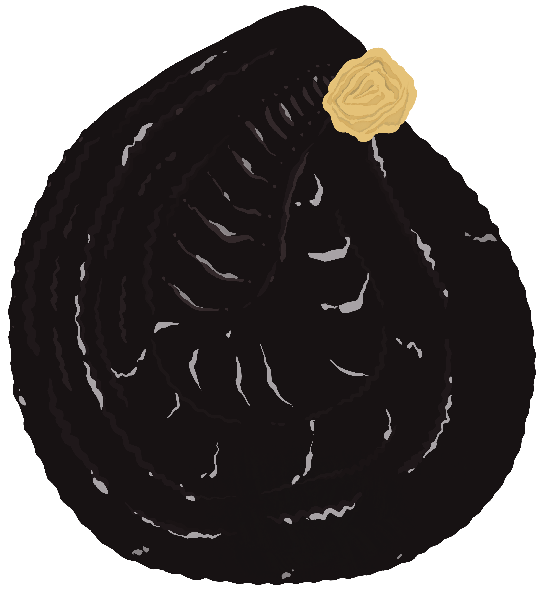
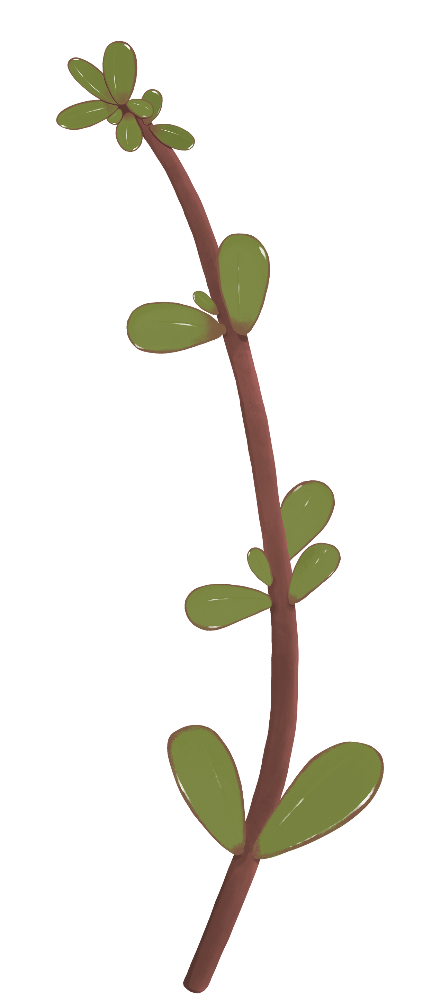

PORCELLANA
Portulaca oleracea
PORTULACEAE
MORFOLOGIA
Pianta erbacea annuale, succosa, lucida e glabra. Il fusto rossastro è lungo dai 10 - 40 cm, sdraiato o ascendente. Le foglie sono sessili (senza picciolo), ovali, glabre, carnose e spatolate, i fiori hanno 5 petali color giallo luminoso mentre i frutti sono capsule con numerosi minuscoli semi neri.
HABITAT
Originaria del territorio euroasiatico, solo in epoca moderna si rintraccia in altri continenti. Si trova facilmente in campi, orti, aie e anche città.
CUCINA
Senza abusare le foglie, raccolte in primavera e estate, sono consumate sia crude che cotte con altre verdure, in misticanze, con gli gnocchi o zuppe.

